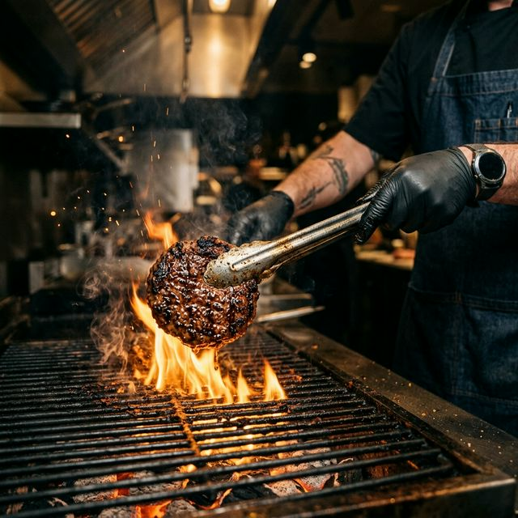

En el Istmo, el deporte es ley. Ya sea un partido de fútbol rápido, una liga de béisbol o una tarde de gimnasio, el esfuerzo físico merece una gran recompensa. Ahí es donde entra el famoso "Tercer Tiempo" en Mr. Papas.
Recuperando la Felicidad
Después de sudar la camiseta, tu cuerpo pide reposición. Una hamburguesa con la dosis justa de proteína y unas papas con carbohidratos son el combustible perfecto para recuperar el ánimo, ganes o pierdas el partido.

Compañerismo en la Mesa
Lo mejor del deporte en Ixtepec no pasa en la cancha, sino en la mesa al terminar. Comentar las jugadas, los goles y las anécdotas sabe mucho mejor con un cono de alitas al centro.
Así que ya sabes, después del silbatazo final, la verdadera victoria está en calle Guadalupe Victoria, ¡te esperamos en Mr. Papas!